Modern Tools Used in
Conservation
Satellite Monitoring
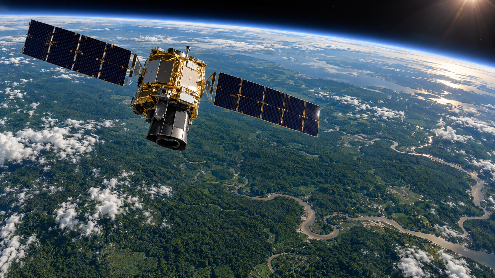
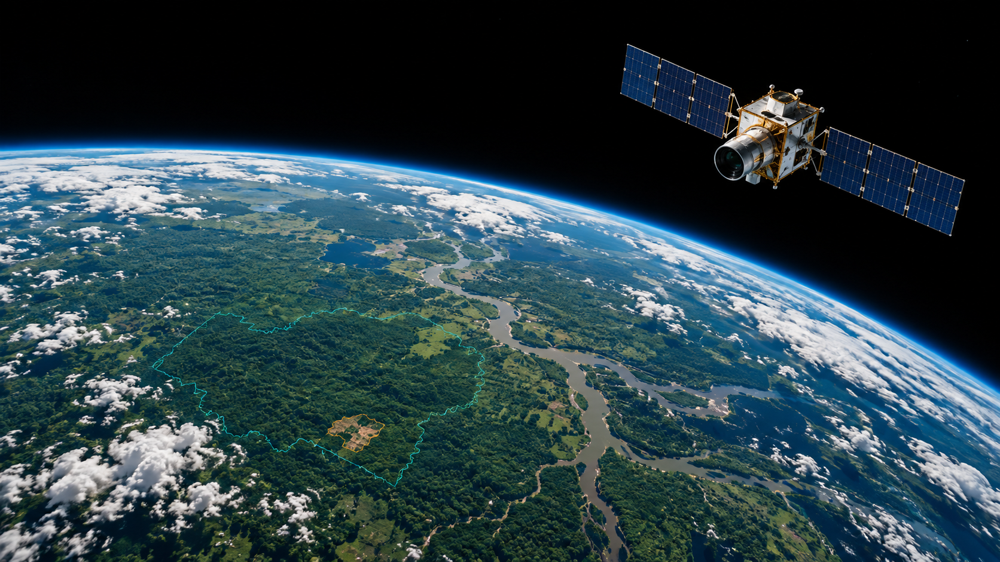
What is Satellite Monitoring?
Satellite monitoring uses satellites orbiting Earth to capture images and collect information about forests, vegetation, land use, and environmental conditions. Remote sensing allows scientists to observe large and often inaccessible areas without physically visiting every location.
How Does It Help Wildlife and Forest Conservation?
-
Detecting deforestation: Comparing satellite images over time can reveal where forests are being cleared or degraded.
-
Monitoring forest fires: Satellite observations can help identify fire activity and assess the extent of damage.
-
Studying wildlife habitats: Changes in vegetation and water availability can help conservationists assess the condition of animal habitats.
-
Planning conservation efforts: Repeated observations help authorities identify areas that may require protection or restoration.
Drones
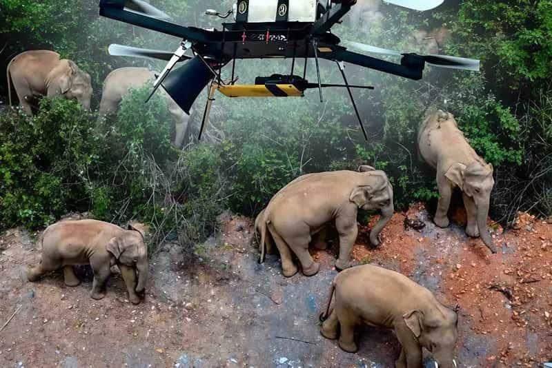
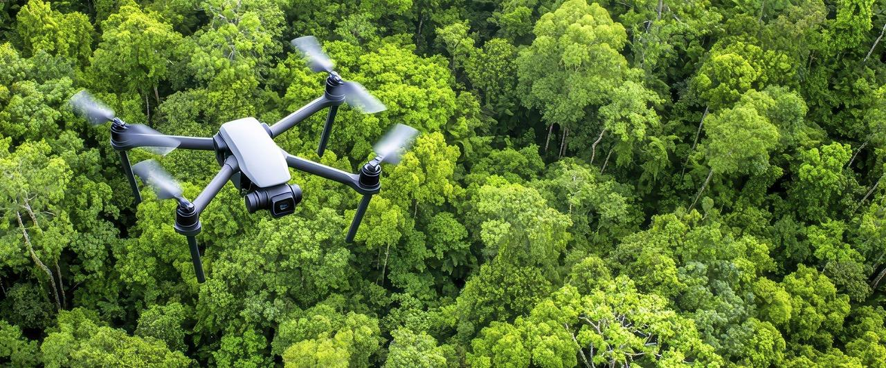
What are Drones?
Drones, also called Unmanned Aerial Vehicles (UAVs), are aircraft that can be operated remotely or fly autonomously using programmed instructions. Equipped with cameras, thermal sensors, and other instruments, they can collect aerial information about forests and wildlife habitats.
How Do They Help Wildlife and Forest Conservation?
-
Aerial surveys: Drones can help researchers observe large areas and assess habitat conditions.
-
Anti-poaching patrols: They can assist forest personnel in surveying remote or difficult-to-access locations.
-
Wildlife observation: Cameras and thermal imaging equipment can help locate animals in suitable conditions, while minimizing the need for ground access.
-
Damage assessment: Aerial imagery can help assess forest fires, illegal clearing, and other disturbances.
Camera Traps and Sensors
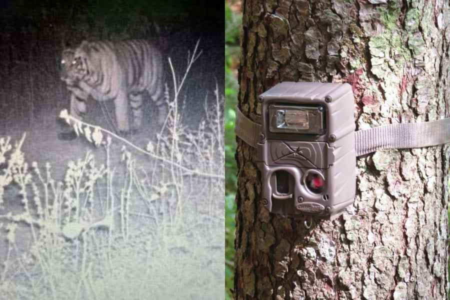
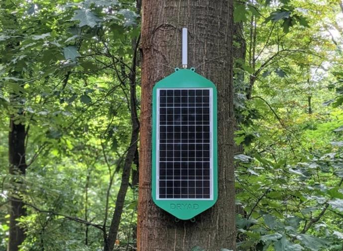
What Are Camera Traps and Sensors?
Camera traps are remotely activated cameras placed in wildlife habitats. They commonly use motion or heat detection to capture photographs or videos when an animal passes nearby. Other monitoring sensors can record environmental conditions, movement, or sounds made by wildlife.
How Do They Help Wildlife and Forest Conservation?
-
Monitoring animal populations: Camera-trap photographs help researchers estimate the presence and numbers of animals in a study area.
-
Identifying individual animals: Distinctive markings, such as a tiger's stripes, can help researchers distinguish individual animals.
-
Studying animal behaviour: Repeated observations reveal activity patterns, habitat use, and interactions between species.
-
Detecting wildlife activity: Acoustic recorders and other sensors can help researchers monitor birds, bats, and other animals that may be difficult to observe directly.
GPS and GIS
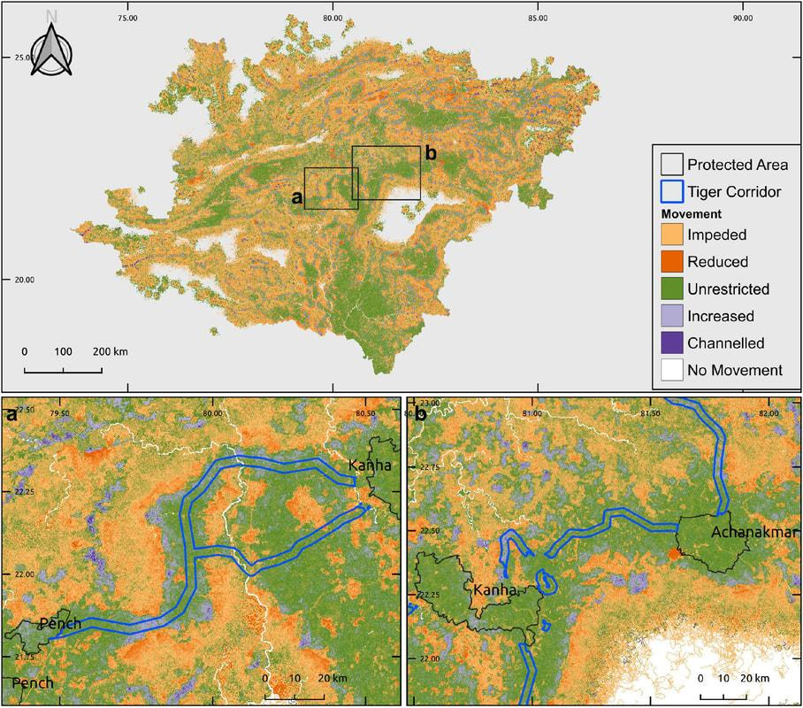
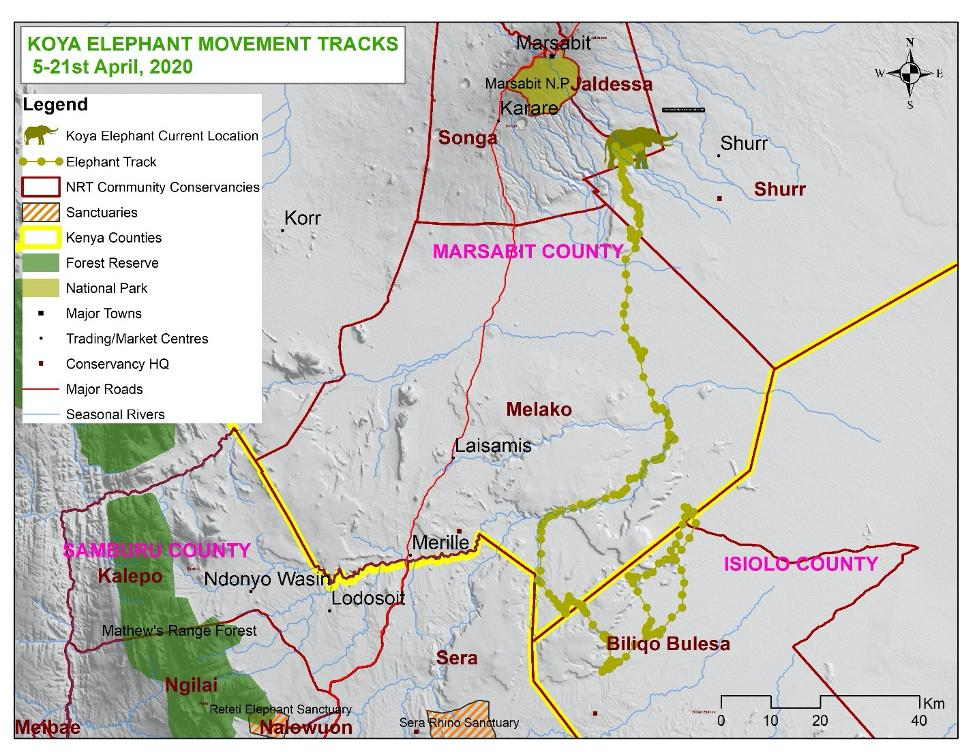
What Are GPS and GIS?
The Global Positioning System (GPS) is a tool designed to monitor geographic locations using satellite signals whereas Geographic Information Systems (GIS) are computer-based tools used to store, analyze, and display location-based information on maps.
When used together, GPS and GIS help conservationists understand where animals move, where threats occur, and how habitats connect across a landscape.
How Do They Help Wildlife and Forest Conservation?
-
Tracking animal movements: GPS collars or tags can help researchers study the movements of selected animals.
-
Mapping wildlife corridors: GIS can help identify connections between forest habitats that animals use to move between areas.
-
Planning protected areas: Maps of vegetation, water sources, roads, and human settlements help support conservation decisions.
-
Recording field observations: GPS coordinates allow forest staff to record the locations of animal sightings, threats, and incidents.
M-STrIPES
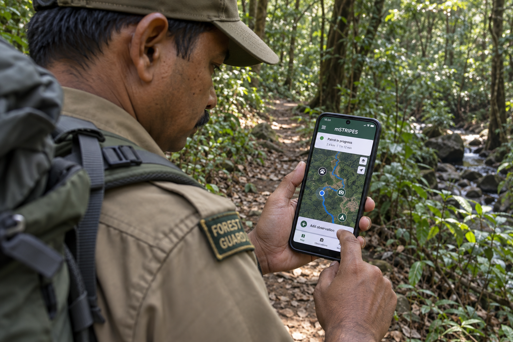
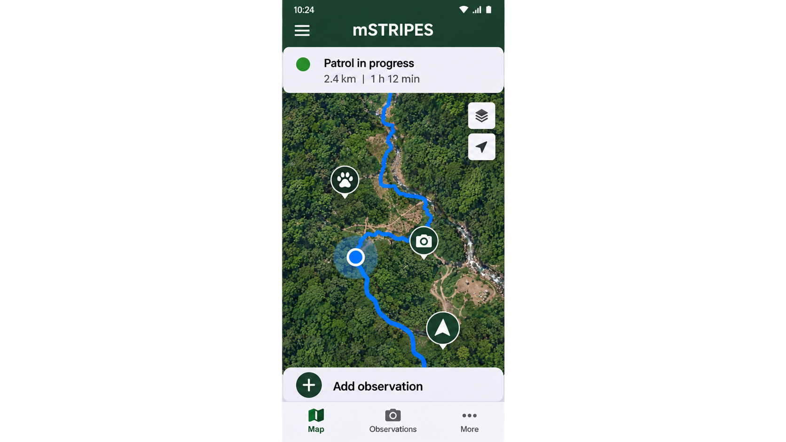
What Is M-STrIPES?
M-STrIPES stands for Monitoring System for Tigers: Intensive Protection and Ecological Status. It is a technology-based system developed to support wildlife protection, field patrolling, ecological monitoring, and management of tiger reserves in India.
The system uses tools such as GPS, digital field records, and geographic analysis to help collect and analyse information from the field.
How Does It Help Wildlife and Forest Conservation?
-
Digital patrolling: Forest staff can record patrol routes, observations, and important incidents.
-
Geotagged evidence: Photographs and observations can be associated with geographic locations to support monitoring and investigation.
-
Ecological monitoring: Field data helps assess wildlife presence, prey populations, habitat conditions, and human disturbances.
-
Better decision-making: Analysed information helps reserve managers identify issues and plan protection activities.
Artificial Intelligence (AI)
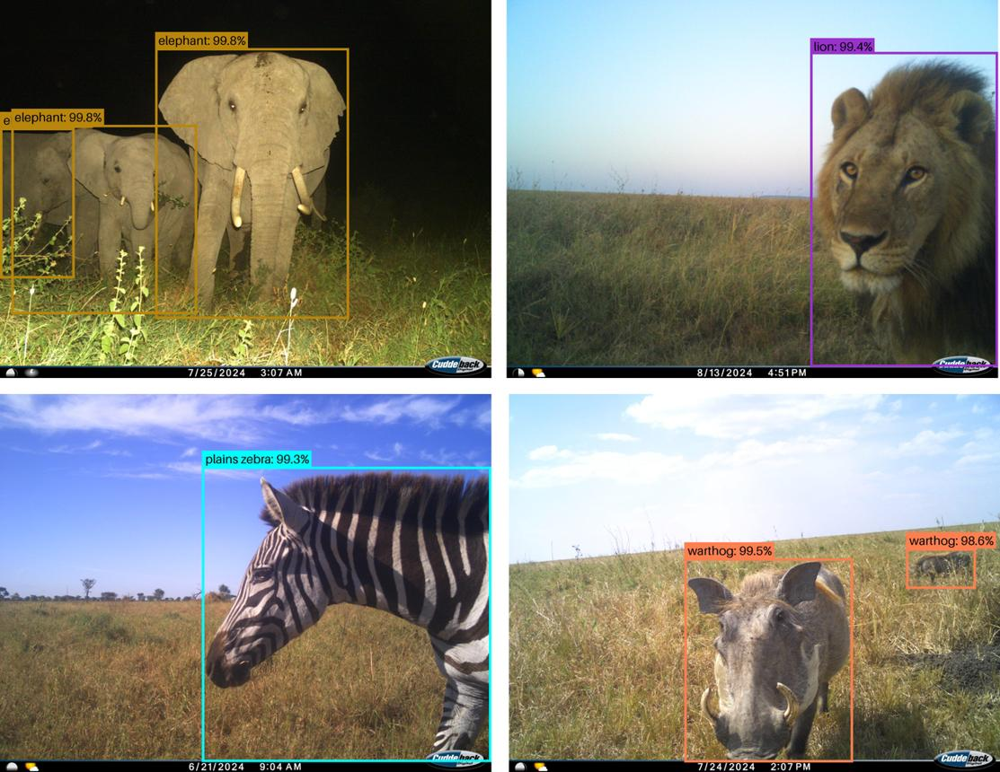
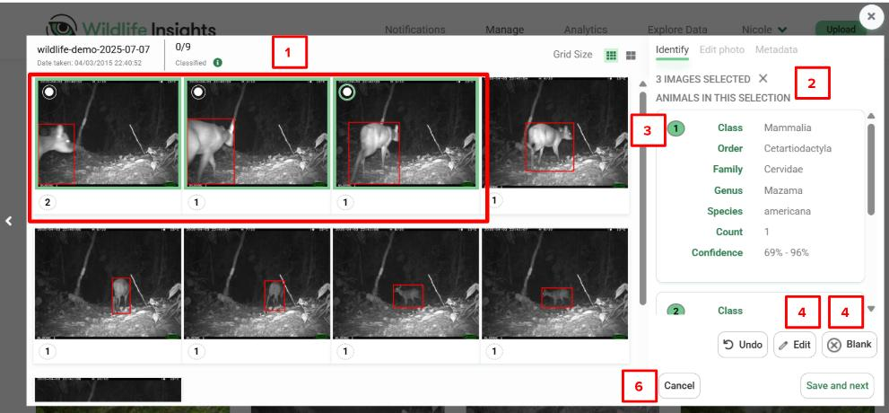
What Is Artificial Intelligence?
Artificial Intelligence (AI) refers to computer systems designed to perform tasks that normally require human intelligence. In wildlife conservation, AI can analyse large collections of photographs, recordings, and environmental data to identify patterns and help researchers process information more efficiently.
How Does It Help Wildlife and Forest Conservation?
-
Automatic species identification: AI models can classify animals appearing in camera-trap photographs.
-
Faster data analysis: Automated sorting reduces the time researchers spend manually reviewing thousands of images.
-
Forest monitoring: AI-assisted analysis of satellite imagery can help identify changes in vegetation and possible deforestation.
-
Early warning and research: When combined with suitable sensor data and monitoring systems, AI can help identify patterns that may indicate emerging environmental threats.